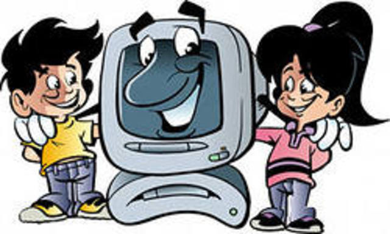

Головна
Безпека – це життя людини,
Безпека – це наше майбуття.
Прийміть до серця світ природи –
Прекрасне буде всіх життя!
У давні часи, щоб отримати якусь інформацію про країну, життєвий статус про її народ та інше, люди використовували листи. А листи відправляли човном, пароплавом. «Доставка» інформації тривала місяць – півроку. Потім стільки ж люди чекали відповіді. З появою літаків на відправку листа і відповіді чекали вже не 2 місяці, а 2 тижні. З появою Інтернету лист відправляється і отримується відповідь через кілька секунд.
Отже, Інтернет – перспективний сектор економіки, який швидко розвивається.
У наш час сучасна молодь вільно володіє можливостями Інтернету та мобільних телефонів, а школярі, можливо, не розуміють, як без цього жив світ 20-22 роки тому.
На початку 1996 року по всьому світу нараховувалось 30 млн. користувачів Інтернету.
У даний час Інтернетом користується 710 029 070 людей. Найбільше зростання користуванням Інтернетом відбувається серед молоді.

У всьому світі діти та підлітки є найбільшими користувачами інформаційно-комунікативних технологій (ІКТ). Вони широко користуються мобільними телефонами, включаючи пересилки МSМ і SМS, шукають інформацію на Інтернет-сторінках (повідомлення чи біографію письменників, композиторів, спортсменів та інших видатних людей), розвивають свій кругозір знань (шукають в Інтернеті ребуси, шаради, кросворди, головоломки та інші розвиваючі завдання для вивчення якої-небудь теми). Прочитують письменників твори, мають гарну підготовку до кожного уроку різних предметів.
Можна цікаво підготувати виховні чи інші класні, шкільні та позакласні заходи, які мають позитивні результати у вихованні молодого покоління. Можна ретельно самостійно підготуватись до іспитів (старшокласникам). Брати активну участь в електронних конкурсах, олімпіадах, конференціях… не тільки міських, обласних, але й у Всеукраїнських, Міжнародних. Школярі пишуть листи та відправляють їх через електронну пошту, створюють свої блоки, спілкуються в чатах та соціальних мережах, обмінюються музикою та фільмами, обговорюють проблеми в форумах, розвиваючи своє мовлення, пам’ять, використовують веб-камеру, skype, та грають в он-лайнові ігри.
Ніколи раніше не було так легко, швидко та зручно знайти людей будь-якого віку, соціального статусу, статі, національності, рівня досвіду й дискутувати ними на якісь завгодно теми, що є цікавими для певних груп. Це більш стосується телевізійної передачі «Зачекай мене», яка включає в себе канали Росії, України, Молдови.
Безумовно, Інтернет є не тільки безпечним, але й небезпечним.
Надмірне перебування дітей за комп’ютером може призвести: до ізоляції сором’язливих дітей, відволікати їх від інших видів діяльності, таких як виконання домашньої роботи, заняття спортом, сон, спілкування з іншими дітьми, особливо нецензурною лексикою
 В Інтернеті швидко розвивається злочинне спілкування. Агресивно налаштовані особи у своїй діяльності. Вони розповсюджують віруси, торгівлю людьми та дітьми через он-лайн, розповсюджують фільми з насильства та жорстокості над неповнолітніми, порнографії, зокрема, дитячої, залякування та приниження. Намагаються залучити неповнолітніх дітей до наркотичних засобів, суїциду, міжнаціональну та релігійну ворожнечу, расизм, фашизм, молодіжну агресивну течію, ігрову залежність з негативним змістом.
В Інтернеті швидко розвивається злочинне спілкування. Агресивно налаштовані особи у своїй діяльності. Вони розповсюджують віруси, торгівлю людьми та дітьми через он-лайн, розповсюджують фільми з насильства та жорстокості над неповнолітніми, порнографії, зокрема, дитячої, залякування та приниження. Намагаються залучити неповнолітніх дітей до наркотичних засобів, суїциду, міжнаціональну та релігійну ворожнечу, расизм, фашизм, молодіжну агресивну течію, ігрову залежність з негативним змістом.
Небезпечні в Інтернеті контакти з незнайомими людьми та зустрічі з ними в реальності.
Діти молодшого та середнього віків повинні користуватися сімейною адресою електричної пошти, а не власною. Проте власна кореспонденція має залишатися у сімейній папці вхідних повідомлень, щоб батьки могли перевірити і застерегти вас, діти, про підозрілі на вигляд повідомлення. Також можна попрохати провайдера, які варіанти сімейних облікових записів електронної пошти він пропонує, та розглянути можливість використання фільтрів електронної пошти, що запобігає надходженню спаму.
Це є актуальною проблемою в даний час, тому не потрібно приховувати від батьків свою зайнятість в Інтернеті.